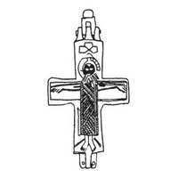
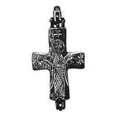

Catalog › CE-0247 · KOR2003-I.2.6
Encolpion cu inel de agățare; Răstignire pe față, sfânt în poziție de Orantă pe revers, linii adâncite
sec. XI–XII (1001–1200) · gubernia Vladimir, Rusia · Muzeul de Istorie de Stat, Moscova (GIM), secția de metale și materiale sintetice (OMSM), inv. 54722, М 6118а
double-sided reliquary cross (enkolpion), aramă; c. XI–XII (1001–1200); find spot unknown; kept at Muzeul de Istorie de Stat, Moscova (GIM), secția de metale și materiale sintetice (OMSM).




Identificare
- Categorie
- Encolpion bivalv (relicvar)
- Material
- Aramă
- Tehnică
- Turnare în relief; Gravare (incizie)
- Dimensiuni
- Î 50 × L 35 mm
Iconografie
- Avers
- Răstignirea (Hristos în colobium)
- Descriere avers
- Pe valva de față, cu linii adâncite, imaginea Răstignirii cu tăbliță și suppedaneum schematic schițate și cu traversa lemnului crucii evidențiată. Hristos în colobium ornamentat cu hașuri oblice, cu brațele drepte, capul aproape neînclinat.
- Revers
- Neidentificat
- Descriere revers
- Pe valva de revers, în aceeași tehnică, imaginea unui sfânt în picioare în poziție de Orantă (probabil Maica Domnului) în veșmânt bogat ornamentat cu hașuri oblice, cu o cruce cu șase brațe deasupra capului și cu semne simbolice („stele”) pe laturi.
Datare și atribuire
- Datare
- sec. XI–XII (1001–1200)
- Centru
- Necunoscut
- Tipologie
- Korzukhina–Peskova 2003, tip I 2
Descoperire
- Regiune
- gubernia Vladimir
- Țară
- Rusia
- Context
- Colecție (fără context)
Păstrare și referințe
- Colecție
- Muzeul de Istorie de Stat, Moscova (GIM), secția de metale și materiale sintetice (OMSM)
- Nr. inventar
- 54722, М 6118а
- Bibliografie
- G. F. Korzukhina, A. A. Peskova, Древнерусские энколпионы. Нагрудные кресты-реликварии XI–XIII вв., Sankt-Petersburg, 2003 [Korzukhina–Peskova 2003], p. 54, cat. nr. I 2/6, reprodusă la Табл. 13 (planșe, p. 255). Bibliografie citată în sursă: Атлас, табл. XXXII, 5, 6; Спицын 1905, 118, рис. 231; Седова 1997, рис. 72, 11; Корзухина, архив ф. 77, д. 14, л. 6.
- Figura
- Табл. 13
- Planșe
- Korzukhina–Peskova 2003, Табл. 13 (planșă fără paginație proprie în PDF; p. 255 tipărită)
- Observații
- Datare după Peskova: sec. XI–XII. Circumstanțe: Intrat în muzeu înainte de 1871. Encolpion cu capete dreptunghiulare, cu inel de agățare. Coordonate: nu sunt date în sursă.
Citare: Corpus Encolpiorum, CE-0247, Encolpion cu inel de agățare; Răstignire pe față, sfânt în poziție de Orantă pe revers, linii adâncite, --root/piese/KOR2003-I.2.6/ (accesat 2026-10-20).